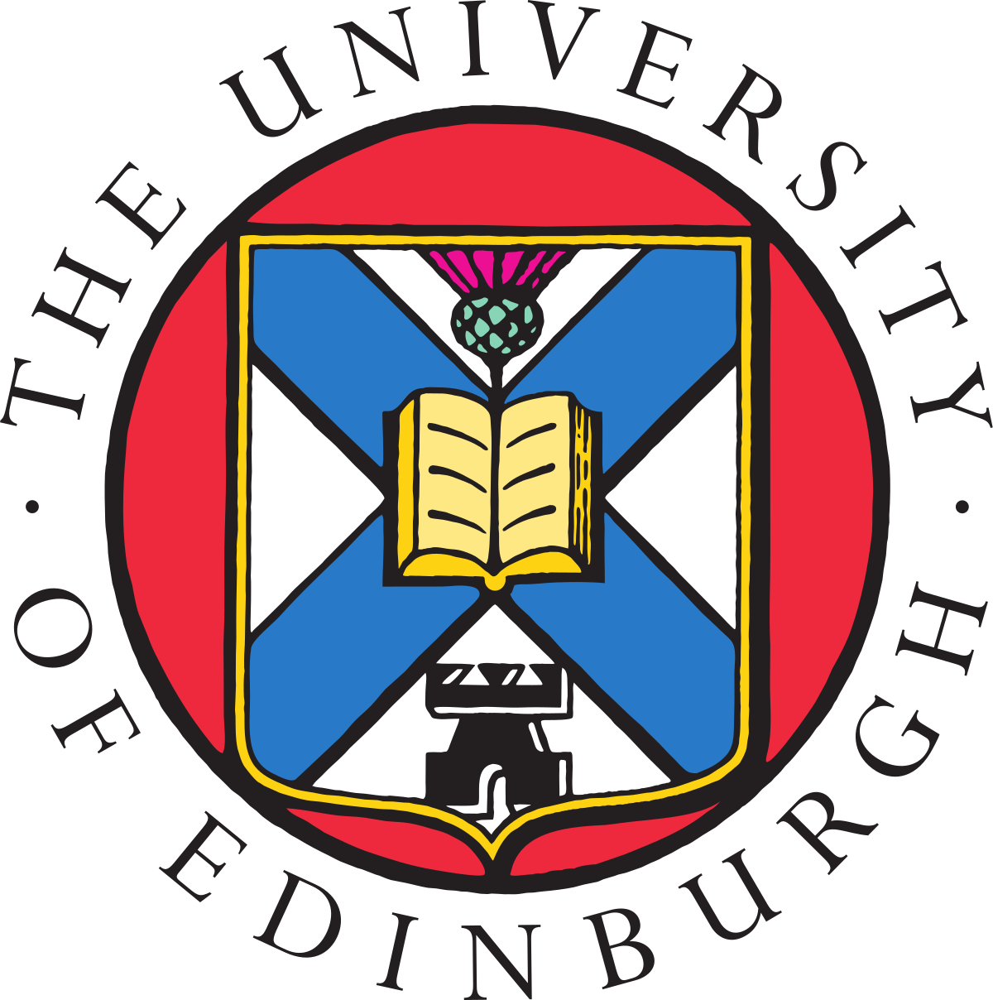

2024–2025
Senior Artificial Intelligence Research Engineer
Tools for Humanity / Worldcoin
Developed deep neural networks for iris and face recognition as part of the Artificial Intelligence and Biometrics team.
AI Researcher & Founder
Founder & CEO, Sapiente Education
Vice-President, Human Economic Forum
I am an AI researcher and entrepreneur based in Dubai. My work spans efficient deep learning, few-shot learning, Bayesian methods, computer vision, and robotics.
I am the founder and CEO of Sapiente Education, which connects students with expert mentors for personalised learning and research, and Vice-President of the Human Economic Forum, promoting dialogue on technology, ethics, and a human-centred economy.
Previously, I worked in AI research at Tools for Humanity and held postdoctoral research positions at the University of Cambridge and the University of Edinburgh.
2024–2025
Tools for Humanity / Worldcoin
Developed deep neural networks for iris and face recognition as part of the Artificial Intelligence and Biometrics team.
2021–2024
Worked with Richard Turner on efficient machine learning through the EPSRC “Machine Learning for Tomorrow” project, in collaboration with Microsoft Research.

2018–2021
Worked with Amos Storkey on few-shot learning and deep kernels in Gaussian processes, in collaboration with Huawei.
2018
Researched disentangled representations in deep autoencoders with Patrick Fox-Roberts and Edward Rosten in the Camera Platform team, London.
2012–2015
Eurolink Systems
Developed autonomous control systems for ground and aerial vehicles, including applications in search and rescue, patrolling, and bomb disposal.
2011–2012
Laboratory of Artificial Life and Robotics (LARAL)
Studied artificial neural networks and genetic algorithms in evolutionary robotics with Domenico Parisi, Rome.
2015–2018
University of Plymouth
Research on social skills in humanoid robots using machine learning. Supervisors: Angelo Cangelosi, Torbjorn Dahl, and Giorgio Metta.
2009–2011
Sapienza University of Rome
Supervisors: Stefano Puglisi Allegra, Domenico Parisi, and Gianluca Baldassarre.
2006–2009
Sapienza University of Rome
Supervisors: Marta Olivetti Belardinelli and Valerio Santangelo.
For the full and latest list, visit Google Scholar.
Shysheya, A., Bronskill, J., Patacchiola, M., Nowozin, S., Turner, R.E. (2023). "FiT: Parameter Efficient Few-shot Transfer Learning for Personalized and Federated Image Classification". International Conference on Learning Representations (ICLR). [arXiv] [GitHub]
Patacchiola, M., Bronskill, J., Shysheya, A., Hofmann, K., Nowozin, S., Turner, R.E. (2022). "Contextual Squeeze-and-Excitation for Efficient Few-Shot Image Classification". Advances in Neural Information Processing Systems (NeurIPS). [arXiv] [GitHub]
Bronskill*, J., Massiceti*, D., Patacchiola*, M., Hofmann, K., Nowozin, S., & Turner, R.E. (2021). "Memory Efficient Meta-Learning with Large Images". Advances in Neural Information Processing Systems (NeurIPS). *Co-first authors. [arXiv]
Sendera, M., Tabor, J., Nowak, A., Bedychaj, A., Patacchiola, M., Trzcinski, T., Spurek, P., & Zieba, M. (2021). "Non-Gaussian Gaussian Processes for Few-Shot Regression". Advances in Neural Information Processing Systems (NeurIPS). [arXiv]
Patacchiola, M., & Storkey, A. (2020). "Self-Supervised Relational Reasoning for Representation Learning". Advances in Neural Information Processing Systems (NeurIPS). Spotlight (top 3%) [arXiv] [GitHub] [Poster]
Patacchiola, M., Turner, J., Crowley, E. J., O'Boyle, M., & Storkey, A. (2020). "Bayesian Meta-Learning for the Few-Shot Setting via Deep Kernels". Advances in Neural Information Processing Systems (NeurIPS). Spotlight (top 3%) [arXiv] [GitHub] [Poster]
Ochal, M., Patacchiola, M., Storkey, A., Vazquez J., & Wang S. (2021). "How Sensitive are Meta-Learners to Dataset Imbalance?". Learning to Learn Workshop - International Conference on Learning Representations (ICLR) [arXiv] [GitHub]
Antoniou, A., Patacchiola, M., Ochal, M., & Storkey, A. (2020). "Defining Benchmarks for Continual Few-Shot Learning". MetaLearn Workshop - Advances in Neural Information Processing Systems (NeurIPS) [arXiv] [GitHub] [YouTube] [Dataset]
Ochal, M., Patacchiola, M., Storkey, A., Vazquez, J., & Wang, S. (2021). "Few-Shot Learning with Class Imbalance". [arXiv] [GitHub]
Polvara*, R., Patacchiola*, M., Hanheide, M., & Neumann, G. (2020). "Sim-to-Real Quadrotor Landing via Sequential Deep Q-Networks and Domain Randomization". Robotics, 9(1), 8. *Co-first authors. [PDF] [GitHub]
Patacchiola, M., Fox-Roberts, P., Rosten, E. (2020). "Y-Autoencoders: Disentangling Latent Representations via Sequential Encoding". Pattern Recognition Letters, Elsevier, vol. 140, pp. 59-65. [arXiv] [DOI] [GitHub]
Thabet, M., Patacchiola, M., & Cangelosi, A. (2019). "Sample-efficient Deep Reinforcement Learning with Imaginary Rollouts for Human-Robot Interaction". IEEE/RSJ International Conference on Intelligent Robots and Systems (IROS) [arXiv]
Polvara* R., Patacchiola*, M., Sharma S., Wan J., Manning A., Sutton R., Cangelosi A. (2018). "Toward End-To-End Control for UAV Autonomous Landing Via Deep Reinforcement Learning". The 2018 International Conference on Unmanned Aircraft Systems (ICUAS). *Co-first authors. [PDF]
Surace, L., Patacchiola, M., Battini Sonmez, E., Spataro, W., & Cangelosi, A. (2017). "Emotion Recognition in the Wild using Deep Neural Networks and Bayesian Classifiers". In Proceedings of the Fifth Emotion Recognition in the Wild (EmotiW) Challenge, Glasgow, United Kingdom. [arXiv]
Patacchiola, M., & Cangelosi, A. (2017). "Head Pose Estimation in the Wild using Convolutional Neural Networks and Adaptive Gradient Methods". Pattern Recognition, Elsevier, vol. 71, pp. 132-143. [PDF] [DOI]
Patacchiola, M., & Cangelosi, A. (2016). "A Developmental Bayesian Model of Trust in Artificial Cognitive Systems". In Proceedings of the International Conference on Development and Learning and Epigenetic Robotics (ICDL-EpiRob). [PDF]
Zanatto, D., Patacchiola, M., Goslin, J., & Cangelosi, A. (2016). "Priming Anthropomorphism: Can the credibility of humanlike robots be transferred to non-humanlike robots?". In The Eleventh ACM/IEEE International Conference on Human-Robot Interaction (HRI). [PDF]